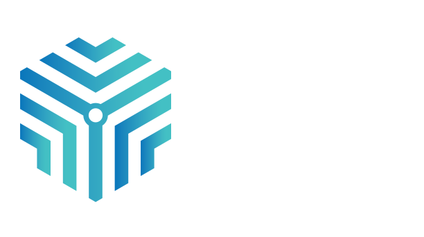

MNJ TechnologiesModernize the revenue engine—not just the ticket queue.
A tailored view of how MNJ can evolve from legacy Rev.io Billing to the new Rev.io: one connected service and revenue platform spanning customer operations, ticketing, projects, billing, payments, and analytics.
MNJ sells an integrated technology journey. Its operating platform should tell the same story.
Diverse services, one customer
MNJ has evolved from VAR to an all-encompassing MSP serving 10,000+ customers across managed IT, cloud, connectivity, hardware, security, network infrastructure, and technology sourcing.
High-coordination delivery
Account executives, solution engineers, project managers, sourcing specialists, service teams, and finance all contribute to the customer lifecycle. Fragmented tools create handoffs; connected context removes them.
Legacy-to-future continuity
MNJ already knows Rev.io for billing. The new platform expands that relationship upstream into service and operations while preserving billing expertise as a strategic foundation.
Account profile based on MNJ’s public website, including About, Technology Sourcing, Managed Services, and Connectivity/Billing Consolidation pages. Evaluation details and system landscape provided by the MNJ/Rev.io account team.
A ticketing-first platform manages service workflows. New Rev.io connects the work to the revenue.
Ticketing-first approach
- Strong focus on incidents, requests, and enterprise workflows
- Service data may still sit apart from contracts, rating, invoices, payments, and margin
- Requires integrations and governance to create an end-to-end revenue view
Service + revenue approach
- Ticketing, dispatch, projects, time, inventory, customer data, billing, and payments in one operating model
- Service activity can flow directly to invoice review and collection
- Reporting starts with connected operational and financial data
The new Rev.io brings the customer lifecycle into one connected workspace.
Service desk + SLA control
Ticket intake, assignment, queues, escalation rules, status visibility, customer history, and SLA tracking—connected to time and billing context.
Projects, scheduling + mobile
Plan resources and milestones, schedule and dispatch work, track progress and budgets, and let teams update jobs, notes, and time from the field.
Time, expense + inventory
Capture billable and non-billable effort against tickets and projects; manage products, hardware, licenses, purchasing, serialization, and deployment history.
Modern billing
Automate recurring, one-time, service, and complex communications billing with customer, product, usage, invoice, and revenue visibility—especially relevant to MNJ’s carrier billing consolidation practice.
Payments + customer portal
Connect invoices to payment collection and give customers self-service visibility into tickets, invoices, payments, projects, and account activity.
AI + workflow automation
Use context-aware automation and insights to reduce repetitive work, support ticket routing, surface gaps, and accelerate operational decisions.
Every handoff becomes traceable—from customer need to collected revenue.
Finance
See the operational source behind charges, reduce reconciliation effort, and track invoice and payment performance with fewer blind spots.
Operations
Manage workload, SLAs, resource utilization, project delivery, and service trends without assembling the story across disconnected systems.
Leadership
Connect customer health, service outcomes, profitability, revenue performance, and growth signals in a shared decision layer.
Powerful analytics without making every operational question a BI project.
Real-time, connected data
Live dashboards draw from service, time, projects, billing, payments, and customer operations—reducing delayed exports and cross-system reconciliation.
Custom and automated reporting
Build reports and dashboards around MNJ’s KPIs, automate delivery, and give teams role-relevant views without complex setup for routine analysis.
Revenue + operational visibility
Analyze SLA performance, technician productivity, utilization, project results, billing accuracy, profitability, customer health, and revenue leakage.
AI-powered exploration
Surface patterns, trends, inefficiencies, and opportunities faster—turning the platform’s connected context into actionable insight.
Keep Dynamics where it creates value—and define the handoffs that eliminate duplicate work.
Discovery first
Confirm which Dynamics products and objects MNJ uses, systems of record, business events, data ownership, volumes, security, and synchronization timing.
Potential workflow
Examples to scope: account/contact sync, closed-won handoff, product and agreement data, project initiation, invoice/payment status, and financial posting.
Integration path
Rev.io is open to evaluating a purpose-built Dynamics integration once the evaluation confirms business value and both teams define requirements and technical feasibility.
Prove the operating model with MNJ’s workflows—not a generic feature tour.
1 · Align leadership outcomes
Agree what success means across finance, operations, service, and executive stakeholders: consolidation, revenue control, reporting, customer experience, and growth.
2 · Map critical workflows
Select 3–5 MNJ scenarios spanning service request, project delivery, recurring/complex billing, invoice review, payment, and management reporting.
3 · Demonstrate end-to-end
Run those scenarios through the new Rev.io and score functional fit, user experience, reporting depth, controls, gaps, and change impact.
4 · Scope architecture + transition
Document legacy Rev.io migration needs, Dynamics touchpoints, data ownership, integration requirements, implementation phases, and commercial assumptions.
Proposed decision output: a jointly validated fit assessment and phased business case for moving MNJ from legacy billing to a unified service and revenue platform.
Public product references: rev.io/products/psa and rev.io/products/psa/reporting-analytics. Capabilities, roadmap items, integration feasibility, and migration scope remain subject to discovery and validation.